ജീവശാസ്ത്രം - IX
y ചലനവൈവിധ്യം y പേശികളുംം വ്യാായാമവും y പേശികൾ y അസ്ഥി, പേശി-തകരാറുകൾ y അസ്ഥിവ്യയവസ്ഥ y അസ്ഥികളുംം പരിണാമവും y വിവിധ ചട്ടക്കൂടുകൾ y സസ്യയചലനങ്ങൾ 87
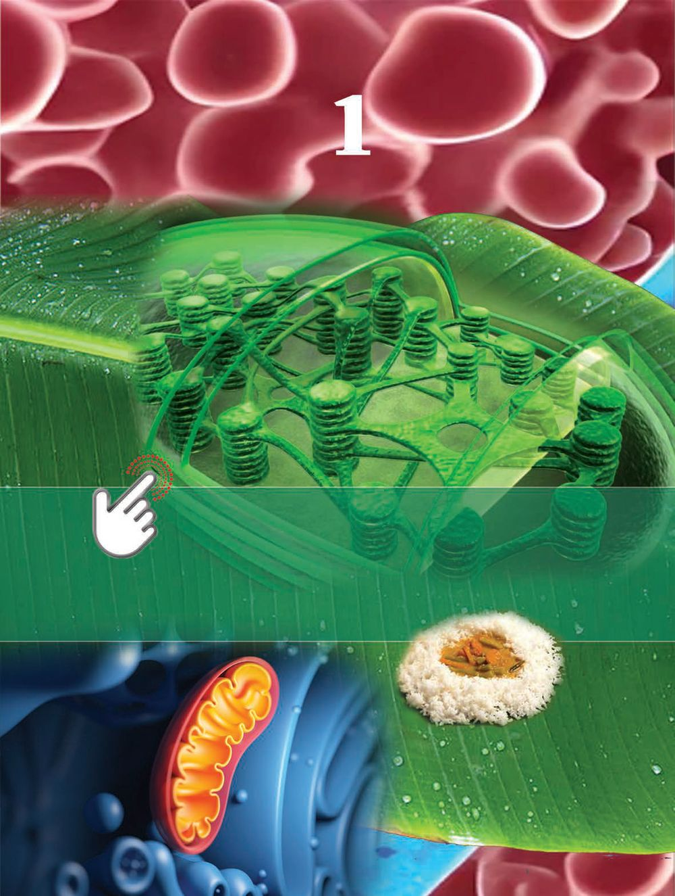
ജീവശാസ്ത്രം - IX
y ചലനവൈവിധ്യം y പേശികളുംം വ്യാായാമവും y പേശികൾ y അസ്ഥി, പേശി-തകരാറുകൾ y അസ്ഥിവ്യയവസ്ഥ y അസ്ഥികളുംം പരിണാമവും y വിവിധ ചട്ടക്കൂടുകൾ y സസ്യയചലനങ്ങൾ 87
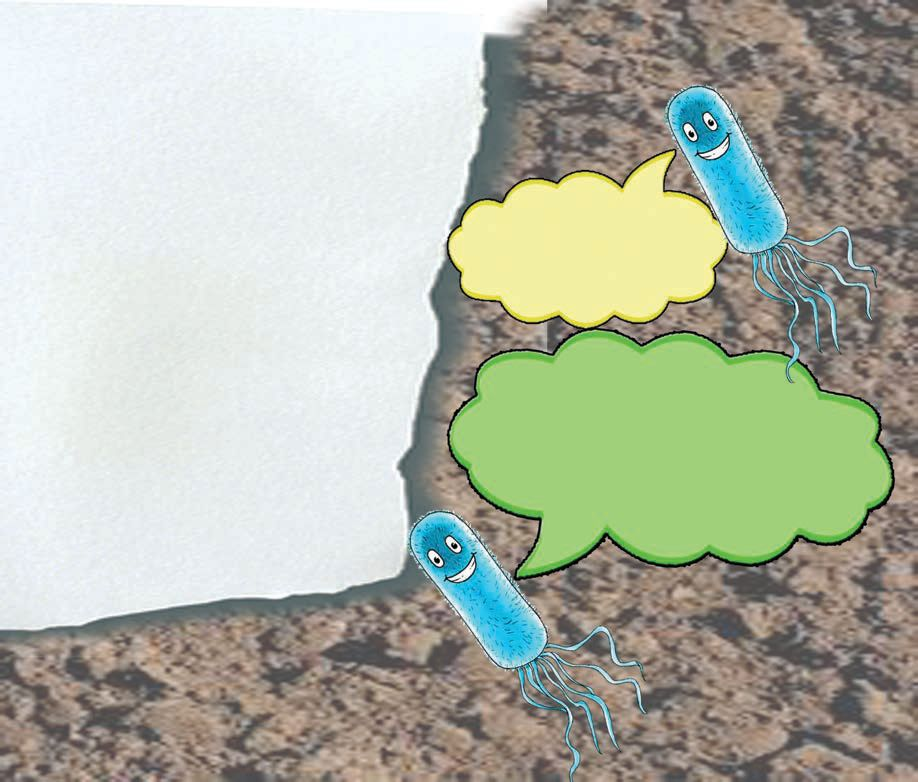
ജീവശാസ്ത്രം - IX
പ്രകൃതിയിൽ കാണപ്പെടുന്ന ബാക്ടീരിയയും ലാബിൽ നിർമ്മിക്കപ്പെട്ട ബാക്ടീരിയയും തമ്മിലുള്ള സാങ്കല്പിക സംഭാഷണമാണ് മുകളിൽ കൊൊടുത്തിരിക്കുന്നത്. ശാസ്ത്രലോോകത്ത് സംഭവിച്ച വിസ്മയകരമായ മുന്നേറ്റം ആയിരുന്നു കൃത്രിമ ബാക്ടീരിയയുടെ സൃഷ്ടി. അതോോടെ ജീവന്റെ താക്കകോലും ശാസ്ത്രത്തിന്റെ കൈവശമായി.
88

ജീവശാസ്ത്രം - IX
ചിത്രം നിരീക്ഷിക്കൂ. ഹരിതാഭമായ ഈ ഭൂമി എത്ര മനോോഹരമാണ് ! സസ്യയങ്ങളുംം ജന്തുക്കളുംം നേരിട്ട് കാണാനാകാത്ത എത്രയോോ സൂക്ഷ്മ ജീവികളുംം ചേർന്നാണ് ഈ ഭൂമിയെ വർണ്ണാഭമാക്കുന്നത്. ആഹാര സമ്പാദനത്തിനും മറ്റുമായി ഇവ ഈ ലോോകത്തെ ചലനാത്മകമാക്കു ന്നില്ലേ ? എന്തെല്ലാം തരം ചലനങ്ങളാണ് ചിത്രത്തിലെ ജീവികളിൽ കാണാൻ കഴിയുന്നത്? .............................................................................................................................................. .............................................................................................................................................. ഇത്തരം ചലനങ്ങൾക്ക് ഊർജം ആവശ്യമില്ലേ? ശരീരത്തിൽ ഉൽപാദിപ്പിക്കുന്ന ഊർജത്തിന്റെ ഏറിയപങ്കും ജന്തുക്കൾ ചലനത്തിനായി വിനിയോോഗിക്കുന്നു. അതിനാൽ സസ്യങ്ങളെ അപേക്ഷിച്ച് ജന്തുക്കൾക്ക് ഊർജത്തിന്റെ ആവശ്യയം കൂടുതലാണ്. ചിത്രീകരണം 4.1 നിരീക്ഷിച്ച് ഓരോോ ജീവിയിലെയും ചലനത്തിന്റെ പ്രാധാന്യയം രേഖപ്പെടുത്തൂ.
ചിത്രീകരണം 4.1 വിവിധതരം ചലനങ്ങൾ
y അമീബയിൽ ആഹാരസമ്പാദനം y y y നിങ്ങൾക്കറിയാവുന്ന മറ്റ് ചലനങ്ങൾ ലിസ്റ്റ് ചെയ്യൂ. .............................................................................................................................................. .............................................................................................................................................. 89
ജീവശാസ്ത്രം - IX
ജീവികളിൽ വിവിധ ആവശ്യങ്ങൾ നിറവേറ്റുന്നതിനായി വൈവിധ്യ മാർന്ന ചലനരീതികളുണ്ടെന്ന് മനസിലായില്ലേ? നഗ്നനേത്രങ്ങൾ കൊൊണ്ട് ദൃശ്യമാവുന്നതും അല്ലാത്തതുമായ നിരവധി ചലനങ്ങളും അതിനനുകൂലമായ വ്യത്യസ്ത ചലനോോപാധികളും ജീവലോോകത്ത് കാണപ്പെടുന്നു. നൽകിയിരിക്കുന്ന ചിത്രീകരണം 4.2 സൂചകങ്ങൾക്കനുസരിച്ച് വിശകലനം ചെയ്ത് ജീവലോോകത്തെ ചലനം സംബന്ധിച്ച് നിഗമനങ്ങൾ രേഖപ്പെടുത്തൂ.
ജീവലോോകത്തെ ചലനങ്ങൾ സൂക്ഷ്മജീവികൾ
ജന്തുക്കൾ
സസ്യങ്ങൾ
ബാക്ടീരിയയിലെ ഫ്ലജെല്ലം, അമീബ യിലെ കപടപാദം, പാരമീസിയത്തിലെ സീലിയ എന്നിവ ഉപയോോഗിച്ചുള്ള ചലനങ്ങൾ സൂക്ഷ്മജീവികളിലെ വൈവിധ്യമാർന്ന ചലനങ്ങൾക്ക് ഉദാഹരണങ്ങളാണ്.
ജന്തുക്കളിൽ ചലനം എന്നത് ശരീരഭാഗത്തിനോോ ചുറ്റുപാടിനെ അപേക്ഷിച്ച് ശരീരത്തിനോോ ഉണ്ടാകുന്ന സ്ഥാനമാറ്റമാണ്. പുംബീജങ്ങളുടെ ചലനം, പെരിസ്റ്റാൾസിസ്, ഹൃദയമിടിപ്പ്, രക്തപര്യയനം, നടത്തം, ഓട്ടം, ചാട്ടം എന്നിവ ഉദാഹരണങ്ങളാണ്.
സഞ്ചരിക്കുന്നി ല്ലെങ്കിലും സസ്യങ്ങളിലും വളർച്ചയുടെ ഭാഗമായും അല്ലാതെയും വിവിധ തരത്തിലുള്ള ചലനങ്ങളുണ്ട്. വിത്തുമുളക്കൽ, ഉദ്ദീപനങ്ങൾക്കനുസരിച്ച് സസ്യഭാഗങ്ങൾക്കുണ്ടാ കുന്ന മാറ്റം എന്നിവ സസ്യചലനങ്ങൾക്ക് ഉദാഹരണങ്ങളാണ്.
പൊൊതുവായ ചലനങ്ങൾ
ചിത്രീകരണം 4.2 ജീവലോോകത്തെ ചലനങ്ങൾ
y സസ്യയങ്ങളിലെ ചലനം y ജന്തുക്കളിലെ ചലനം y പൊൊതുവായ ചലനങ്ങൾ y സൂക്ഷ്മചലനങ്ങളുംം സ്ഥൂലചലനങ്ങളുംം ജീവികളിലെ ചലനങ്ങളിൽ വലിയ വൈവിധ്യമുണ്ട് എന്ന് മനസ്സിലാ ക്കിയല്ലലോ. ഇത്തരം ചലനങ്ങൾക്ക് സഹായകമായ വിവിധ ഉപാധികൾ ജീവികളിലുണ്ട്. 90
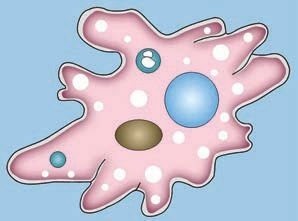
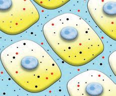
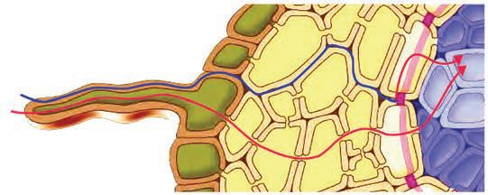
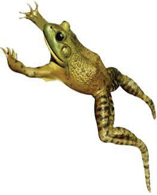
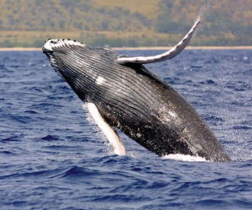
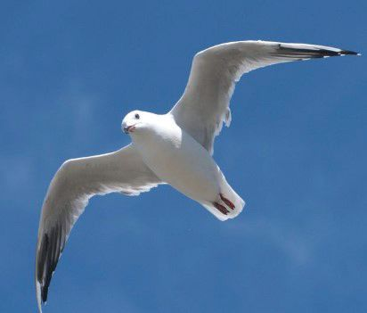
ജീവശാസ്ത്രം - IX
ചിത്രീകരണം 4.3 ൽ നൽകിയിരിക്കുന്ന ജീവികളിലെ ചലനോോപാധി കൾ തിരിച്ചറിഞ്ഞ് ചിത്രീകരണം പൂർത്തിയാക്കൂ.
പാരമീസിയം
യൂഗ്ലീന
മത്സ്യം
തവള
തിമിംഗലം
പക്ഷി
ചിത്രീകരണം 4.3 ജീവികളിലെ ചലനോോപാധികൾ ഇത്തരത്തിൽ കൂടുതൽ ജീവികളെ ഉൾപ്പെടുത്തി പട്ടിക 4.1 വിപുലീ കരിക്കൂ.
ജീവികൾ
ചലനോോപാധി
ബാക്ടീരിയ അമീബ ഹൈഡ്ര
പട്ടിക 4.1 ജീവികളിലെ ചലനോോപാധികൾ 91
ജീവശാസ്ത്രം - IX
വ്യത്യസ്ത ജീവികളിലെ ചലനോോപാധികളെക്കുറിച്ച് മനസ്സിലാക്കിയ ല്ലലോ. മനുഷ്യനിലെ ചലനം എപ്രകാരമാണ്? അതിനുള്ള ഉപാധികൾ എന്തെല്ലാമാണ്? ചർച്ചചെയ്തും അധികവിവരം ശേഖരിച്ചും ചിത്രീക രണം 4.4 പൂർത്തിയാക്കൂ.
ശരീരചലനങ്ങൾ സ്യയൂഡോോപോോഡിയൽ ചലനം
കോോശദ്രവ്യചലനങ്ങൾ പദാർഥങ്ങളെ കോോശദ്രവ്യ ത്തിലുടനീളം വിതരണം ചെയ്യാൻ സഹായിക്കുന്നു.
ശ്വവേതരക്താണുക്കളിലെ കപടപാദങ്ങൾ സഞ്ചാരത്തിനും പ്രതിരോോധത്തിനും സഹായിക്കുന്നു.
ഫ്ലജെല്ലാർ ചലനം
സീലിയറി ചലനം
....................................................... ....................................................... .......................................................
....................................................... ....................................................... .......................................................
പേശീചലനം പേശികളുടെ സങ്കകോചവും പൂർവസ്ഥിതി പ്രാപിക്കലും വിവിധ ചലനങ്ങൾക്ക് സഹായിക്കുന്നു. ചിത്രീകരണം 4.4 മനുഷ്യനിലെ ചലനവും ചലനോോപാധികളും പേശീകളുടെ പ്രവർത്തനമാണ് മനുഷ്യരിലെ വൈവിധ്യമാർന്ന ചലനങ്ങൾക്കും സഞ്ചാരത്തിനും കാരണമാകുന്നത്. പേശികളുടെ എന്ത് സവിശേഷതയാണ് ചലനത്തിന് സഹായിക്കുന്നത്? നൽകിയിരിക്കുന്ന വിവരണം വിശകലനം ചെയ്ത് നിഗമനങ്ങൾ രൂപീകരിക്കൂ.
92
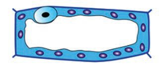
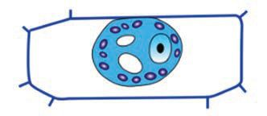
ജീവശാസ്ത്രം - IX
പേശീകല (Muscle tissue) ശരീരചലനങ്ങൾക്ക് കാരണമാകുന്ന സവിശേഷകലകളാണ് പേശികൾ. ശരീരത്തിൽ വിവിധതരത്തിലുള്ള പേശികളുണ്ട്. ഇവ പേശീകോോശങ്ങൾ കൊൊണ്ടാണ് നിർമ്മി ക്കപ്പെട്ടിരിക്കുന്നത്. പേശീകോോശങ്ങളിൽ മർമ്മവും മിക്ക കോോശാംഗങ്ങളും കാണപ്പെടുന്നു. എന്നാൽ മറ്റ് കോോശങ്ങളിൽ നിന്ന് വ്യയത്യയസ്തമായി ആക്ടിൻ (Actin), മയോോസിൻ (Myosin) എന്നിങ്ങനെ അതിസൂക്ഷ്മങ്ങളായ പ്രോാട്ടീൻ തന്തുക്കൾ ഇവയിൽ കൂടുതലുണ്ട്. ഈ തന്തുക്കളുടെ പ്രവർത്തനം മൂലം പേശികൾ സങ്കോോചിക്കുകയും പൂർവസ്ഥിതി പ്രാപിക്കുകയും ചെയ്യുന്നു. ഇത് ശരീരഭാഗങ്ങളുടെ ചലനം സാധ്യയമാക്കുന്നു.
പ്രരോട്ടീൻ തന്തുക്കൾ ആക്ടിൻ
മയോോസിൻ
• പേശീകലകളുടെ സവിശേഷതകൾ • പേശീകോോശങ്ങളിലെ പ്രരോട്ടീനുകളും പ്രാധാന്യവും. മനുഷ്യശരീരത്തിലെ വിവിധതരത്തിലുള്ള നിങ്ങൾ മനസ്സിലാക്കിയിട്ടുണ്ടല്ലലോ?
പേശികളെക്കുറിച്ച്
ചിത്രീകരണം 4.5 വിശകലനം ചെയ്തും നൽകിയിരിക്കുന്ന പ്രവർത്തനം ചെയ്തും പട്ടിക 4.2 പൂർത്തിയാക്കൂ.
93
ആക്ടിനും മയോോസിനും പേശിയുടെ സങ്കകോചത്തെ ് സഹായിക്കുന്നത എങ്ങനെ? കണ്ടെത്തൂ.
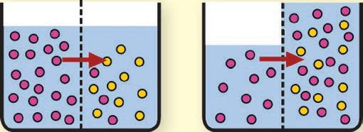
ജീവശാസ്ത്രം - IX
അസ്ഥിപേശി (Skeletal muscle)
മൃദുലപേശി (Smooth muscle)
ഹൃദയപേശി (Cardiac muscle)
ചിത്രീകരണം 4.5 വിവിധതരം പേശികൾ ചിത്രീകരണം നിരീക്ഷിച്ചല്ലലോ. ലബോോറട്ടറിയിൽ പേശികളുടെ പെർമനന്റ് സ്ലൈഡ് നിരീക്ഷിക്കുന്ന പ്രവർത്തനം പൂർത്തിയാക്കൂ.
പേശികളെ നിരീക്ഷിക്കാം വിവിധ പേശികളുടെ സൂക്ഷ്മ സവിശേഷതകൾ തിരിച്ചറിയുന്നതിന് സ്കൂൾ ലബോോറട്ടറിയിലുള്ള പേശീകലകളുടെ പെർമെനന്റ് സ്ലൈഡുകൾ മൈക്രരോസ്കകോപ്പിലൂടെ വ്യത്യസ്ത മാഗ്നിഫിക്കേഷനിൽ (Magnification) നിരീക്ഷിക്കൂ. നിരീക്ഷണം ചിത്രീകരിക്കൂ. ഇതിനെ ചിത്രീകരണം 4.5 നോോട് താരതമ്യയം ചെയ്ത് നിഗമനങ്ങൾ രൂപീകരിക്കൂ. 94
ജീവശാസ്ത്രം - IX
അസ്ഥികളുമായി പൊൊള്ളയായ (Hollow) ഹൃദയഭിത്തിയിലെ ബന്ധിപ്പിച്ചിരിക്കുന്ന ആന്തരാവയവങ്ങളിലെ പേശികൾ പേശികൾ പേശികൾ പേശിയുടെ പേര് കോോശങ്ങളുടെ ആകൃതി കുറുവരകളുടെ സാന്നിധ്യയം ശാഖകൾ ആഗ്രഹത്തിനനുസരിച്ച് പേശികളുടെ നിയന്ത്രണം പട്ടിക 4.2 വിവിധതരം പേശികൾ നമ്മുടെ ആഗ്രഹത്തിനനുസരിച്ച് നിയന്ത്രിക്കാൻ കഴിയുന്നവയും (ഐച്ഛിക പേശികൾ) നിയന്ത്രിക്കാൻ കഴിയാത്തവയും (അനൈച്ഛിക പേശികൾ) ആയ പേശികൾ ശരീരത്തിലുണ്ട്. ഇവ ഓരോോന്നും ഏതെല്ലാം ശരീരഭാഗങ്ങളിൽ കാണപ്പെടുന്നു? ചർച്ചയിലൂടെ ഉദാഹ രണങ്ങൾ കണ്ടെത്തി പട്ടികപ്പെടുത്തൂ. ഐച്ഛിക പേശികൾ
(Voluntary muscles)
y കൈകളിലെ പേശികൾ y
അനൈച്ഛിക പേശികൾ (Involuntary muscles)
y അന്നനാളത്തിലെ പേശികൾ y
പട്ടിക 4.3 ഐച്ഛിക, അനൈച്ഛിക പേശികൾ കൈകൾ മടക്കുകയും നിവർത്തുകയും ചെയ്യുന്നത് ഐച്ഛിക ചലനമാണ് എന്ന് നിങ്ങൾക്കറിയാമല്ലലോ. എങ്ങനെയാണ് ഈ ചലനം നടക്കുന്നത്? ഈ പ്രവർത്തനത്തിൽ മുഖ്യമായും രണ്ടുപേശികൾ പങ്കെടുക്കുന്നു. കൈകൾ മടക്കുകയും നിവർത്തുകയും ചെയ്തും ചിത്രീകരണം 4.6 വിശകലനം ചെയ്തും പേശികളുടെ സങ്കകോചവികാസങ്ങൾ മനസ്സിലാക്കി സൂചകങ്ങൾക്കനുസരിച്ച് ചർച്ചചെയ്തും കുറിപ്പ് തയ്യാറാക്കൂ. 95
അനൈച്ഛിക പേശികളുടെ ം പ്രവർത്തന നിയന്ത്രിക്ക പ്പെടുന്നത് എങ്ങനെ? . കണ്ടെത്തൂ

ജീവശാസ്ത്രം - IX
ടെൻഡൺ മടക്കൽപേശി
(Flexor muscle)
നിവർത്തൽപേശി
(Extensor muscle)
അസ്ഥികൾ ചിത്രീകരണം 4.6
കൈകളുടെ ചലനം
y പേശികളെ അസ്ഥികളുമായി ബന്ധിപ്പിച്ചിരിക്കുന്ന ഭാഗം y കൈകളുടെ ചലനത്തിൽ ഉൾപ്പെടുന്ന പേശികൾ y പേശികളുടെ രണ്ടഗ്രങ്ങളെ രണ്ട് അസ്ഥികളുമായി ബന്ധിപ്പിച്ചിരിക്കുന്നതിന്റെ പ്രാധാന്യയം y കൈകൾ മടക്കുന്നതിന് ഇരുപേശികൾക്കും ഉണ്ടാകേണ്ട മാറ്റം. y കൈകൾ നിവർത്തുന്നതിന് ഇരുപേശികൾക്കും ഉണ്ടാകേണ്ട മാറ്റം. കൈകളുടെ മടക്കലും നിവർത്തലും സാധ്യമാകുന്നത് രണ്ട് പേശി കളുടെ പരസ്പരവിരുദ്ധമായ പ്രവർത്തനത്താലാണ്. ഇത്തരത്തിലുള്ള പേശീപ്രവർത്തനങ്ങളാണ് ശരീരത്തിലെ മിക്ക ചലനങ്ങളും സാധ്യമാ ക്കുന്നത്.
പേശീക്ലമം (Muscle fatigue) കായികപ്രവർത്തനങ്ങളിൽ ഏർപ്പെടുമ്പപോൾ പേശികൾക്ക് തുടർച്ചയായി പ്രവർത്തി ക്കേണ്ടിവരുന്നു. ഇതിന് ഏറെ ഊർജം ആവശ്യമാണ്. പേശീകോോശങ്ങളിൽ ഓക്സിജന്റെ സാന്നിധ്യത്തിൽ കോോശശ്വസനം നടന്ന് ATP രൂപപ്പെടുന്നു എന്ന് മനസ്സിലാക്കിയല്ലലോ. ATP തന്മാത്രകളിൽ നിന്ന് ഊർജം സ്വവീകരിച്ചാണ് പേശികൾ പ്രവർത്തിക്കുന്നത്. അസ്ഥിപേശി കൾക്ക് തുടർച്ചയായി പ്രവർത്തിക്കേണ്ടിവരുമ്പപോൾ (ഉദാ- വ്യയായാമം) വേണ്ട അളവിൽ ഓക്സിജൻ ലഭ്യമായില്ലെങ്കിൽ പേശി ക്ഷീണിക്കുകയും സങ്കകോചിക്കാനുള്ള കഴിവ് താൽ ക്കാലികമായി നഷ്ടപ്പെടുകയും ചെയ്യുന്നു. ഈ അവസ്ഥയ്ക്ക് പേശീക്ലമം എന്ന് പറയുന്നു. ഇതിന് കാരണങ്ങൾ എന്തെല്ലാമായിരിക്കും? കണ്ടെത്തൂ.
96
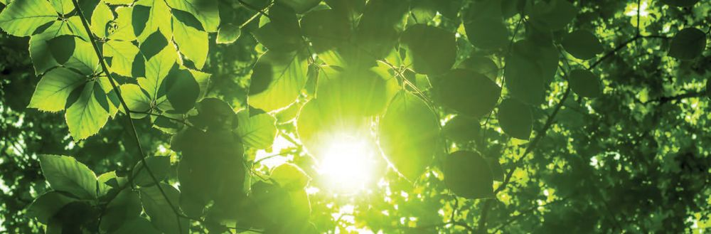
ജീവശാസ്ത്രം - IX
പേശികളുടെ പ്രവർത്തനംകൊൊണ്ടുമാത്രം ചലനം സാധ്യമാകുമോോ? നിങ്ങളുടെ ഊഹം കുറിക്കൂ. .............................................................................................................................................. മനുഷ്യരിൽ പേശികളെ അസ്ഥികളുമായോോ തരുണാസ്ഥികളുമായോോ ബന്ധിപ്പിച്ചിട്ടുണ്ട്. പേശികളും അസ്ഥികളും ചേർന്ന് പ്രവർത്തിക്കുന്നതുകൊൊണ്ടാണ് വൈവിധ്യമാർന്ന ചലനങ്ങൾ സാധ്യമാകുന്നത്. സ്കൂൾ ലാബിലെ അസ്ഥികൂടം നിരീക്ഷിച്ചും ചിത്രീകരണം 4.7 വിശകലനം ചെയ്തും മനുഷ്യയാസ്ഥികൂടത്തിലെ രണ്ടുവിഭാഗങ്ങളെക്കുറിച്ച് ധാരണ കൈവരിച്ച് ഭാഗങ്ങൾ അടയാളപ്പെടുത്തി ചിത്രീകരണം പൂർത്തിയാക്കുക. സൂചകങ്ങൾക്കനുസരിച്ച് കുറിപ്പ് തയ്യാറാക്കുക.
മനുഷ്യയാസ്ഥികൂടം (Human skeleton)
അനുബന്ധാസ്ഥികൂടം
അക്ഷാസ്ഥികൂടം (Axial skeleton)
(Appendicular skeleton)
ശരീരത്തിന്റ കേന്ദ്ര അക്ഷത്തിൽ (Central axis) കാണപ്പെടുന്ന അസ്ഥികളെ ഉൾക്കകൊള്ളുന്നു.
കേന്ദ്ര അക്ഷത്തിലേക്ക് ഘടിപ്പിച്ചിരിക്കുന്ന അസ്ഥികളെ ഉൾക്കകൊള്ളുന്നു.
തലയോോട്
- 29
തോോൾവലയം
മാറെല്ല്
-
ശ്രരോണീവലയം -
വാരിയെല്ല്
-
കൈകൾ
-
നട്ടെല്ല്
-
കാലുകൾ
-
- 4
ചിത്രീകരണം 4.7 മനുഷ്യയാസ്ഥികൂടം 97
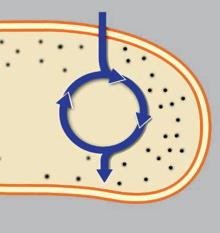
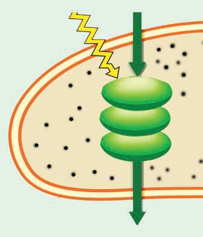
ജീവശാസ്ത്രം - IX
ും കുട്ടികളില ും രില മുതിർന്നവ ുടെ ള അസ്ഥിക എണ്ണം ാണോോ? യ പോോലെ ഒരു ന്ത്? കാരണമെ . തൂ കണ്ടെത്
y
മനുഷ്യാസ്ഥികൂടത്തിന്റെ രണ്ടുവിഭാഗങ്ങൾ
y
അസ്ഥികളുടെ ആകെ എണ്ണം
y
അക്ഷാസ്ഥികൂടത്തിലെയും അനുബന്ധാസ്ഥി കൂടത്തിലെയും അസ്ഥികളുടെ എണ്ണം
അസ്ഥികൂടത്തിൽ അസ്ഥികളുടെ സ്ഥാനം, ഓരോോ ഭാഗത്തുമുള്ള അസ്ഥികളുടെ എണ്ണം എന്നിവ മനസ്സിലാക്കിയല്ലലോ. അസ്ഥിയുടെ ഘടനാപരമായ സിശേഷതകൾ എന്തെല്ലാമാണ്? ചുവടെ നൽകിയ വിവരണം സൂചകങ്ങളുടെ അടിസ്ഥാനത്തിൽ വിശകലനം ചെയ്ത് കുറിപ്പ് തയ്യാറാക്കൂ.
അസ്ഥിയുടെ ഘടന (Structure of Bone) പെരിഓസ്റ്റിയം രക്തക്കുഴലുകൾ
അസ്ഥികൾ മനുഷ്യശരീരഭാരത്തിന്റെ 18 ശതമാനം വരും. ശരീരത്തിന് ഘടനയും താങ്ങും സംരക്ഷണവും നൽകുന്നത് അസ്ഥികളാണ്. ഓരോോ അസ്ഥിയെയും പൊൊതിഞ്ഞു കാണ പ്പെടുന്ന ആവരണമാണ് പെരിഓസ്റ്റിയം (Periosteum). അസ്ഥികളിൽ രക്തക്കുഴലുകളും നാഡികളും ലിംഫ് വാഹികളും കാണപ്പെടുന്നു. കാത്സ്യം, ഫോോസ്ഫേറ്റ്, കൊൊളാജൻ പ്രോട്ടീൻ, ലവണങ്ങൾ എന്നിവ അസ്ഥിക്ക് കാഠിന്യവും ബലവും നൽകുന്നു. അസ്ഥികളുടെ വളർച്ച, കേടുപാടുകൾ പരിഹരിക്കൽ, ധാതുക്കളെ നിക്ഷേപിച്ച് എല്ലുകളെ ശക്തവും ദൃഢവുമാക്കൽ എന്നിവ നിർവഹിക്കുന്നത് അസ്ഥികളിലെ ഓസ്റ്റിയോോബ്ലാസ്റ്റ് (Osteoblast) കോോശങ്ങളാണ്.
y
അസ്ഥികളുടെ കാഠിന്യം
y
ഓസ്റ്റിയോോബ്ലാസ്റ്റ് കോോശങ്ങളുടെ ധർമ്മം
98
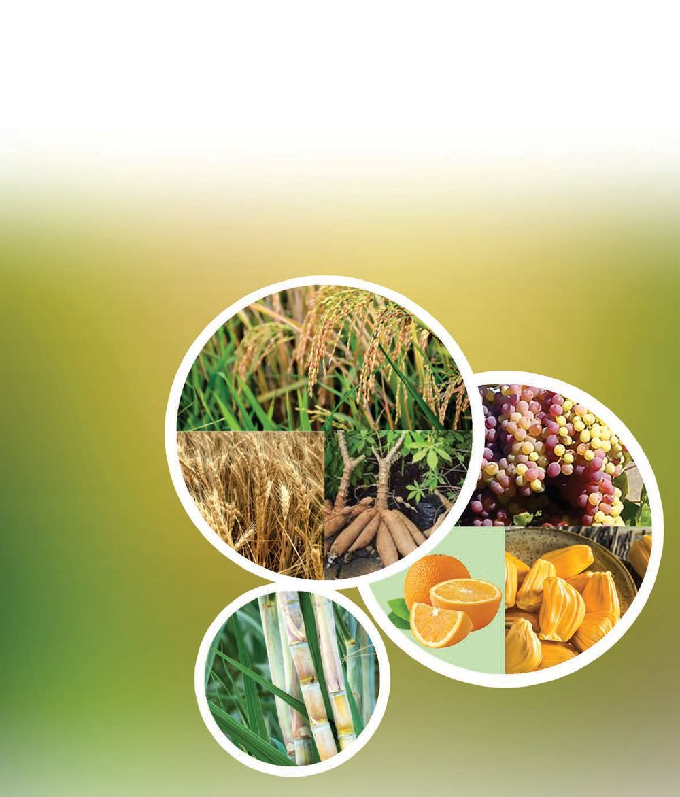
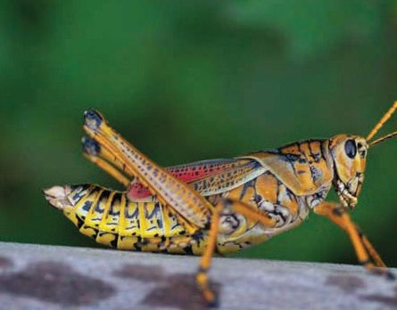
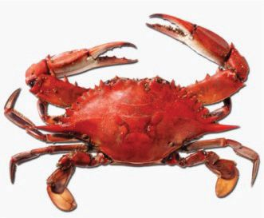
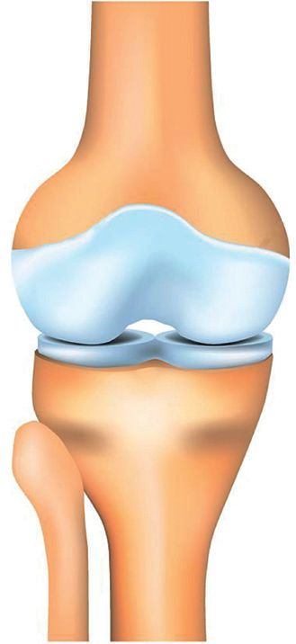
ജീവശാസ്ത്രം - IX പേശികളെ അസ്ഥികളുമായോോ തരുണാസ്ഥികളുമായോോ ബന്ധിപ്പിച്ചിട്ടുണ്ടല്ലലോ. എന്താണ് അസ്ഥിയും തരുണാസ്ഥിയും തമ്മിലുള്ള വ്യത്യയാസം?
തന്നിരിക്കുന്ന വിവരണം വിശകലനം ചെയ്ത് കുട്ടിയുടെ സംശയത്തിന് ഉത്തരം കണ്ടെത്തൂ. മനുഷ്യനെപ്പപോലെ എല്ലാ ജീവികളിലും അസ്ഥി നിർമ്മിത ചട്ടക്കൂടുണ്ടടോ? ചിത്രം 4.1 നിരീക്ഷിച്ച് ചർച്ചയുടെ അടിസ്ഥാനത്തി ൽ നിഗമനം രൂപീകരിക്കൂ.
പുൽച്ചാടി
തരുണാസ്ഥി (Cartilage) അസ്ഥികളെക്കാൾ മൃദുവായതും വഴക്കവുമുള്ളതുമായ യോോജകകലയാണ് തരുണാസ്ഥി. കൈമുട്ടുകൾ, കാൽമുട്ടുകൾ, കണങ്കാ ലുകൾ എന്നിവയിലും വാരിയെല്ലുകളുടെ അഗ്രങ്ങളിലും നട്ടെല്ലിലെ കശേരുക്കൾക്കിടയിലും ചെവിക്കുടയിലും മൂക്കിന്റെ അഗ്രഭാഗത്തും ശ്വവാസനാളത്തിലും ഇവ കാണപ്പെടുന്നു. അസ്ഥികളുടെ അഗ്രഭാഗങ്ങളിൽ കാണപ്പെടുന്ന തരുണാസ്ഥി അസ്ഥിസന്ധികളിലെ ഘർഷണം കുറയ്ക്കുന്നു. ഇവയിൽ രക്തക്കുഴലുകളോോ നാഡികളോോ ഇല്ല. രക്തക്കുഴലുകളുടെ അഭാവം മൂലം തരുണാസ്ഥി ഇതരകലകളെക്കാൾ സാവധാനത്തിലാണ് വളരുന്നത്.
ഞണ്ട്
ചിത്രം 4.1 വിവിധ ജീവികളുടെ ചട്ടക്കൂടുകൾ എല്ലാ ജീവികളിലും മനുഷ്യനെപ്പപോലെ അസ്ഥിനിർമ്മിത ചട്ടക്കൂട് (ആന്തരാസ്ഥികൂടം) ഇല്ല എന്ന് മനസ്സിലായില്ലേ. ഈ ജീവികളിൽ ഓരോോന്നിലും ചട്ടക്കൂട് വ്യത്യയാസപ്പെട്ടിരിക്കുന്നു. തന്നിരിക്കുന്ന വിവരണം വിശകലനം ചെയ്ത് ചിത്രീകരണം 4.8 പൂർത്തിയാക്കൂ. 99
മണ്ണിര
ജീവശാസ്ത്രം - IX
ചട്ടക്കൂടിലെ വൈവിധ്യയം ഹൈഡ്രോസ്കെലിട്ടൺ (Hydroskeleton) മണ്ണിരയുടെ ശരീരത്തിനുള്ളിൽ ദ്രവം നിറഞ്ഞിരിക്കുന്ന അറകളുണ്ട്. ശരീരാകൃതി നിലനിർത്തുന്നതിനും സഞ്ചാരത്തിനും ജലമാണ് ഇവിടത്തെ ഉപാധി. ഈ സംവിധാനം പൊൊതുവേ ഹൈഡ്രോസ്കെലിട്ടൺ എന്നറി യപ്പെടുന്നു. ഹൈഡ്ര, ഒച്ച് എന്നിവയിലും ഹൈഡ്രരോസ്കെലിട്ടൺ ചലനത്തിന് സഹായിക്കുന്നു.
ബാഹ്യയാസ്ഥികൂടം (Exoskeleton) ഞണ്ട്, കക്ക, ചിപ്പി എന്നീ ജന്തുക്കളിൽ കാണപ്പെടുന്ന കാത്സ്യം കാർബണേറ്റ് മുഖ്യഘടകമായ കാഠിന്യമുള്ള പുറംതോോടും പുൽച്ചാടി, പാറ്റ എന്നിവയിലെ കൈറ്റിൻ കൊൊണ്ട് നിർമ്മിച്ചിരിക്കുന്ന ബാഹ്യയാവരണവും ബാഹ്യയാസ്ഥികൂട മാണ്. ഇവ പേശികളെ ഉചിതസ്ഥാനങ്ങളിൽ ബന്ധിപ്പിച്ച് ചലനത്തിനും സഞ്ചാരത്തിനും ശരീരസംരക്ഷണത്തിനും സഹായിക്കുന്നു.
ആന്തരാസ്ഥികൂടം (Endoskeleton) മനുഷ്യനുൾപ്പെടെ നട്ടെല്ലുള്ള ജീവികളിൽ തരുണാസ്ഥി, അസ്ഥി എന്നിവ കൊൊണ്ടുള്ള ചട്ടക്കൂടാണുള്ളത്. ശരീരത്തിന് ആകൃതി നൽകുകയും അവയ വങ്ങളെ സംരക്ഷിക്കുകയും ചലനത്തിനും സഞ്ചാരത്തിനും സഹായിക്കുകയും ചെയ്യുന്ന ഈ സംവിധാനം ആന്തരാസ്ഥികൂടം എന്നറിയപ്പെടുന്നു. ശരീരചട്ടക്കൂട്
ഹൈഡ്രരോസ്കെലിട്ടൺ
ബാഹ്യയാസ്ഥികൂടം
y
ആന്തരാസ്ഥികൂടം y
സവിശേഷതകൾ
ഉദാഹരണങ്ങൾ
ചിത്രീകരണം 4.8 ചട്ടക്കൂടിലെ വൈവിധ്യയം ആന്തരാസ്ഥികൂടം ഉള്ള ജീവികളിൽ ബാഹ്യയാസ്ഥികൂടത്തിന്റെ ഭാഗ ങ്ങൾ ഉണ്ടടോ? ചർച്ചചെയ്ത് കണ്ടെത്തൂ. 100
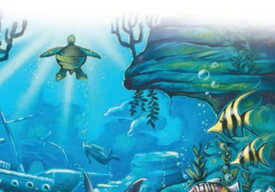
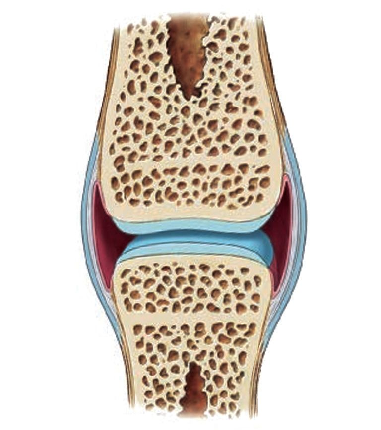
ജീവശാസ്ത്രം - IX
വിവിധ ജീവികളുടെ ആന്തര-ബാഹ്യയാസ്ഥികൂടങ്ങൾ ശേഖരിച്ച് സയൻസ് ലാബിൽ ഒരു പ്രദർശനം സംഘടിപ്പിക്കൂ.
അസ്ഥിസന്ധികൾ (Joints) അസ്ഥികൾ പരസ്പരം ബന്ധപ്പെട്ടിരിക്കുന്നത് സന്ധികൾ വഴിയാണ്. ഇങ്ങനെ അസ്ഥികളെ തമ്മിൽ ബന്ധിപ്പിച്ചിരിക്കുന്നതിലൂടെ ചലനം സുഗമമാകുന്നു. അസ്ഥിസന്ധിക്ക് ചില സവിശേഷതകളുണ്ട്. ചിത്രീകരണം 4.9 ഉം നൽകിയ സൂചനകളും വിശകലനം ചെയ്ത് അസ്ഥിസന്ധിയുടെ ഘടനയെപ്പറ്റി കുറിപ്പ് തയ്യാറാക്കൂ.
ബാഹ്യയാസ്ഥി ില കൂടമുള്ള ച ജീവികൾ അവയുടെ ് പുറന്തതോട ് ന്നത പൊൊഴിക്കു ിരിക്കും? എന്തിനായ തൂ. കണ്ടെത്
ലിഗമെന്റ് കാപ്.സ്യയൂൾ തരുണാസ്ഥി സൈനോോവിയൽ സ്തരം സൈനോോവിയൽ ദ്രവം അസ്ഥി ചിത്രീകരണം 4.9 അസ്ഥിസന്ധിയുടെ ഘടന രണ്ട് അസ്ഥികളെയും ബന്ധിപ്പിച്ച് ലിഗമെന്റുകൾ കാണപ്പെടുന്നു. ഇതിനുള്ളിലായി കാണപ്പെടുന്ന കാപ്.സ്യയൂൾ അസ്ഥികളുടെ സുഗമമായ ചലനത്തിന് സഹായിക്കുന്നു. ഓരോോ അസ്ഥിയുടെയും അഗ്രഭാഗത്തെ പൊൊതിഞ്ഞ് തരുണാസ്ഥി കാണപ്പെടുന്നു. ഇത് അസ്ഥികൾ തമ്മിലുള്ള ഘർഷണത്തെ കുറക്കുന്നു. സന്ധിയിലെ രണ്ട് അസ്ഥികൾക്കിടയിൽ കാണുന്ന ദ്രവമാണ് സൈനോോവിയൽദ്രവം. ഇതും അസ്ഥികൾ തമ്മിലുള്ള ഘർഷണത്തെ കുറക്കുന്നു. സൈനോോവിയൽ ദ്രവത്തെ ഉൽപാദിപ്പിക്കുന്നത് സൈനോോവിയൽ സ്തരത്തിലെ സൈനോോവിയൽ കോോശങ്ങളാണ്. ശരീരത്തിലെ എല്ലാ അസ്ഥിസന്ധികളും ഒരുപോോലെയാണോോ? ധർമ്മ മനുസരിച്ച് അസ്ഥിസന്ധികൾ വ്യത്യയാസപ്പെട്ടിരിക്കുന്നു. ശരീരത്തിലെ വിവിധതരം സന്ധികളെക്കുറിച്ച് നിങ്ങൾ പഠിച്ചിട്ടുണ്ടല്ലലോ. നൽകിയിരിക്കുന്ന അസ്ഥിസന്ധികളുടെ ചിത്രം വിശകലനം ചെയ്ത് പട്ടിക 4.4 പൂർത്തിയാക്കുക. 101
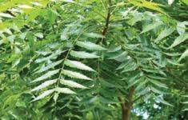
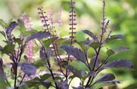
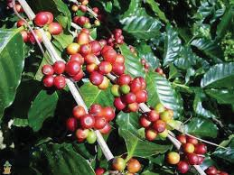
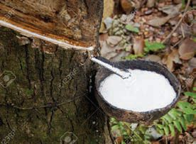
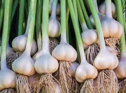
ജീവശാസ്ത്രം - IX
വിവിധതരം അസ്ഥിസന്ധികൾ
പേര് ഗോോളരസന്ധി വിജാഗിരി സന്ധി
(Ball and Socket Joint)
(Hinge Joint)
കീലസന്ധി തെന്നിനീങ്ങുന്ന സന്ധി
(Pivot Joint)
(Gliding Joint)
സവിശേഷത സ്ഥാനം
പട്ടിക 4.4 വിവിധതരം അസ്ഥിസന്ധികൾ ശരീരത്തിന്റെ വിവിധഭാഗങ്ങളിലുള്ള സന്ധികളെക്കുറിച്ച് കൂടുതൽ വിവരം ശേഖരിച്ച് ചാർട്ട് തയ്യാറാക്കി ക്ലാസിൽ പ്രദർശിപ്പിക്കൂ.
ശരീരവളർച്ചയും അസ്ഥികളുടെ വികാസവും കുട്ടിക്കാലത്തിലെയും കൗമാരത്തിലെയും വളർച്ച അസ്ഥിവ്യവസ്ഥയുടെ വികാസവുമായി ബന്ധപ്പെട്ടിരിക്കുന്നു. അസ്ഥികളിൽ കാത്സ്യം എത്തിച്ചേരേണ്ടത് അസ്ഥികളുടെ കാഠിന്യവും ശക്തിയും ഉറപ്പുവരുത്താൻ അത്യയാവശ്യമാണ്. കാത്സ്യം അടങ്ങിയ ഭക്ഷണങ്ങളായ പാലും പാലുൽപന്നങ്ങളും (തൈര്, വെണ്ണ) മത്സസ്യങ്ങളും ഇലക്കറികളും ഈ പ്രായത്തിൽ ധാരാളം കഴിക്കേണ്ടതുണ്ട്. കാത്സ്യം ആഗിരണം ചെയ്യുന്നതിന് വിറ്റാമിൻ D ആവശ്യമാണ്. ത്വക്കിൽ സ്വവാഭാവികമായി വിറ്റാമിൻ D ഉൽപാദിപ്പിക്കാൻ സൂര്യപ്രകാശമേൽക്കുന്നതിന് ഉതകുന്ന കളികളിലേർപ്പെടാം. മുട്ട, കൊൊഴുപ്പുള്ള മത്സ്യം (മത്തി, അയല) എന്നിവ വിറ്റാമിൻ D യുടെ നല്ല ഉറവിടങ്ങളാണ്. അസ്ഥിവികാസത്തിന് പ്രോട്ടീൻ അത്യയാവശ്യമായതിനാൽ ഇറച്ചി, ബീൻസ്, പയർ തുടങ്ങിയവ ആഹാരത്തിൽ സമൃദ്ധമായി ഉൾപ്പെടുത്താം. പ്രായമാകുന്നതോോടെ അസ്ഥികളുടെ സാന്ദ്രത കുറയുന്നത് എല്ലുകളെ കൂടുതൽ ദുർബലമാക്കുകയും ഒടിവുകൾക്ക് കാരണമാകുകയും ചെയ്യുന്നു. അസ്ഥികളുടെ ശോോഷണം തടയുന്നതിൽ പോോഷകാഹാരത്തിന് നിർണ്ണായക പങ്കുണ്ട്.
വിറ്റാമിൻ ഡി ത യുടെ അപര്യയാപ്ത ശരീരത്തെ എപ്രകാരം ബാധിക്കും? കണ്ടെത്തൂ.
പേശികൾക്കകൊപ്പം അസ്ഥികളും ചേർന്ന് പ്രവർത്തിക്കുന്നതിനാലാണ് ശരീരചലനം സാധ്യമാകുന്നത് എന്ന് മനസ്സിലാക്കിയല്ലലോ. മറ്റെന്തെ ല്ലാമാണ് അസ്ഥികളുടെ ധർമ്മം? ചർച്ചചെയ്ത് ലിസ്റ്റ് വിപുലീകരിക്കൂ. y രക്തകോോശങ്ങളുടെ രൂപീകരണം y y y y 102
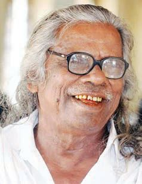

ജീവശാസ്ത്രം - IX
പേശികളും വ്യയായാമവും ചലനത്തിലൂടെ പേശീകോോശങ്ങളുടെ സജീവത ഉറപ്പാക്കാം. വ്യയായാമം പേശികളെ ദൃഢമാക്കുകയും കാര്യക്ഷമത വർധിപ്പിക്കുകയും ചെയ്യു ന്നു. വ്യയായാമം ശരീരത്തിന് ഏതെല്ലാം രീതിയിൽ പ്രയോോജനപ്പെടുന്നു? ആരോോഗ്യ-കായിക വിദ്യയാഭ്യയാസത്തിന്റെ ആക്ടിവിറ്റി ബുക്ക് പരിശോോ ധിച്ചും ചർച്ചചെയ്തും പട്ടിക 4.5 പൂർത്തിയാക്കൂ.
ശരീരഭാഗം ശ്വവാസകോോശങ്ങൾ
വ്യയായാമത്തിന്റെ പ്രയോോജനം വൈറ്റൽ കപ്പാസിറ്റി കൂടുന്നു, വാതകവിനിമയം കാര്യക്ഷമമാകുന്നു.
കൈകാലുകൾ പേശികൾ, അസ്ഥികൾ ഹൃദയവും രക്തക്കുഴലുകളും പട്ടിക 4.5 വ്യയായാമത്തിന്റെ പ്രയോോജനം
അസ്ഥികളുടെയും പേശികളുടെയും തകരാറ് വിശ്രമമില്ലാതെയുള്ള, അമിതമായ പേശീപ്രവർത്തനം പേശികളെ ദോോഷകരമായി ബാധിക്കും. പേശികളെപ്പപോലെ അസ്ഥികൾക്കും പരിക്കുകൾ സംഭവിക്കാം. തന്നിരിക്കുന്ന വിവരണം വിശകലനം ചെയ്ത് അസ്ഥികൾ, പേശികൾ എന്നിവയ്ക്കുണ്ടാകാവുന്ന തകരാറുകളെ ക്കുറിച്ചുള്ള പട്ടിക 4.6 പൂർത്തിയാക്കൂ.
വൈറ്റൽ കപ്പാസിറ്റി ഗാഢമായ ഉച്ഛ്വാസത്തി നുശേഷം ശക്തമായി നിശ്വസിക്കുമ്പപോൾ പുറത്തുവിടുന്ന വായുവിൻ്റെ ആകെ അളവാണ് വൈറ്റൽ കപ്പാസിറ്റി. ഒരു വ്യക്തിക്ക് ശ്വസിക്കാൻ കഴിയുന്ന പരമാവധി വായുവിന്റെ അളവാ ണിത്. വ്യക്തിയുടെ ശ്വസനാരോോഗ്യത്തിന്റെ അളവുകൂടിയാണിത്. ഈ അളവ് പുരുഷന്മാ രിൽ ഏകദേശം 4.5 ലിറ്ററും സ്ത്രീകളിൽ 3 ലിറ്ററും ആണ്. വൈറ്റൽ കപ്പാസിറ്റി കുറയുന്നത് ശ്വാസ കോോശ രോോഗങ്ങളുടെ സൂചനയാകാം.
ഓസ്റ്റിയോോപോോറോോസിസ് (Osteoporosis) അസ്ഥിഭാഗങ്ങൾ നശിക്കുകയും സുഷിരങ്ങൾ രൂപപ്പെട്ട് അസ്ഥികളുടെ കാഠിന്യയം നഷ്ടപ്പെടുകയും ചെയ്യുന്ന അവസ്ഥയാണിത്. പ്രോട്ടീൻ, കാത്സ്യം, വിറ്റാമിൻ D എന്നിവയുടെ അഭാവം ഈ രോോഗാ വസ്ഥയ്ക്കിടയാക്കുന്നു.
റുമാറ്ററോയിഡ് ആർത്രൈറ്റിസ് (Rheumatoid arthritis) ശരീരത്തിന് പ്രതിരോോധശക്തി നൽകുന്ന വ്യയവസ്ഥ ചിലരിൽ തരുണാസ്ഥിയെയും സൈനോോവിയൽ സ്തരത്തെയും നശിപ്പിച്ചേക്കാം. ഇത് സന്ധികളിൽ അസഹ്യയമായ വേദനയും നീർവീക്കവും ഉണ്ടാക്കുന്നു. ഈ വൈകല്യംം പുരുഷന്മാരെക്കാൾ സ്ത്രീകളിൽ കൂടുതലായി കാണപ്പെടുന്നു. ഈ തകരാറുകൾ സ്ത്രീകളിൽ കൂടുതലായി കാണപ്പെടുന്നതിന്റെ കാരണം കണ്ടെത്തൂ. 103

ജീവശാസ്ത്രം - IX
പേശീക്ഷയം (Muscular dystrophy) പലകാരണങ്ങൾകൊൊണ്ട് പേശികൾക്ക് നാശം ഉണ്ടാകുന്ന അവസ്ഥ. പേശികൾ ദുർബല മാകുന്നു. സാധാരണയായി ആൺകുട്ടികളിലാണ് കാണപ്പെടുന്നത്. ജീനുകളിലുണ്ടാകുന്ന മാറ്റമാണ് ഇതിന്റെ പ്രധാന കാരണം.
ഉളുക്ക് (Sprain) സന്ധിയിലെ അസ്ഥികളെ ബന്ധിപ്പിക്കുന്ന ലിഗമെന്റുകൾ വലിയുകയോോ പൊൊട്ടുകയോോ ചെയ്തുണ്ടാകുന്ന പരിക്കാണ് ഉളുക്ക്. ഇത് സാധാരണയായി കണങ്കാൽ, കൈത്തണ്ട, കാൽമുട്ടുകൾ തുടങ്ങിയവയിലെ സന്ധികളെ ബാധിക്കുന്നു. വേദന, വീക്കം, ചതവ്, സന്ധി ചലിപ്പിക്കാനുള്ള ബുദ്ധിമുട്ട് എന്നിവയാണ് ഉളുക്കിൻ്റെ ലക്ഷണങ്ങൾ.
രോോഗം
കാരണം
ലക്ഷണം
പട്ടിക 4.6 വിവിധ അസ്ഥി, പേശീവൈകല്യങ്ങൾ
ഡിസ്ക് തെറ്റൽ (Disc Prolapse)
ശരീരത്തിന് താങ്ങ് നൽകുന്നതോോടൊൊപ്പം സുഷുമ്നയ്ക്ക് സംരക്ഷണവും നൽകുന്ന ഭാഗമാണ് നട്ടെല്ല് (Vertebral column). നട്ടെല്ലിലുള്ള ഓരോോ അസ്ഥിയെയും കശേരു (Vertebra) എന്ന് വിളിക്കുന്നു. രണ്ട് കശേരുക്കൾക്കിടയിൽ ജെല്ലുപോോലുള്ള വസ്തു നിറഞ്ഞ ഇന്റർവെർട്ടിബ്രൽ ഡിസ്ക് എന്ന സവിശേഷഭാഗം കാണപ്പെടുന്നു. ഇവ നട്ടെല്ലിന് വഴക്കം നൽകുന്നതോോടൊൊപ്പം ബാഹ്യക്ഷതങ്ങളിൽ നിന്നും സംരക്ഷിക്കുകയും ചെയ്യുന്നു. കുനിയുക, നിവരുക തുടങ്ങിയ പ്രവർത്തനങ്ങളിൽ ഏർപ്പെടാൻ നമ്മെ പര്യാാപ്തമാക്കുന്നത് ഇന്റർവെർട്ടിബ്രൽ ഡിസ്ക്കിന്റെ സാന്നിധ്യയമാണ്. ശരീരഭാരത്തെ നട്ടെല്ലിലുടനീളം തുല്യയമായി വിതരണം ചെയ്യുന്നതും ഈ ഡിസ്ക്കുകളാണ്. കശേരുക്കളുടെ തേയ്മാനം, പെട്ടെന്നുള്ള ആഘാതം, നട്ടെല്ലിന് ആവർത്തിച്ചുണ്ടാകുന്ന ആയാസം എന്നിവമൂലം ഇന്റർവെർട്ടിബ്രൽഡിസ്കിന്റെ ഉൾഭാഗത്തെ ജെല്ലുപോോലുള്ള ഭാഗം പുറത്തേക്ക് തള്ളാനിടവരുംം. ഈ അവ സ്ഥയാണ് ഡിസ് ക് തെറ്റൽ. ഈ തള്ളൽ സുഷുമ്നാനാഡികളിൽ സമ്മർദം ചെലുത്തുന്ന തോോടെ ശരീരഭാഗങ്ങളിൽ വേദനയും മരവിപ്പും ഉണ്ടാകും. ഇത് ഗുരുതരമായാൽ കഠിനമായ നടുവേദന കാലുകളിൽ ബലക്കുറവ്, സംവേദന ക്ഷമത നഷ്ടപ്പെടൽ എന്നിവയ്ക്കും കാരണമാകും. അടിയന്തിരമായി വൈദ്യയസഹായം ആവശ്യയമുള്ള സാഹചര്യയമാണിത്. 104
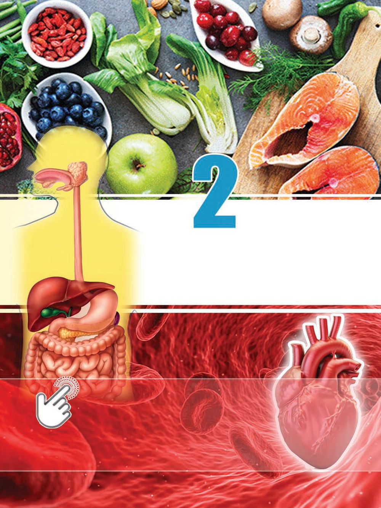


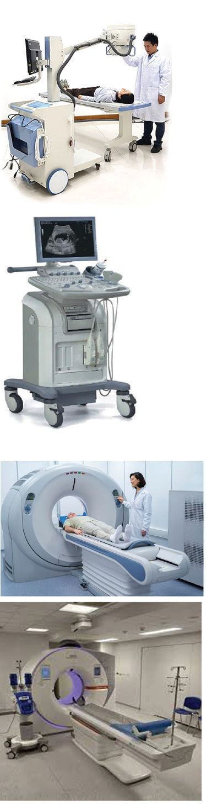
ജീവശാസ്ത്രം - IX
അസ്ഥികൾക്കും പേശികൾക്കും പരിക്കുകളുണ്ടായാൽ നൽകേണ്ട പ്രഥമശുശ്രൂഷകളെപ്പറ്റി മനസ്സിലാക്കിയിട്ടുണ്ടടോ? ചുവടെ നൽകിയിരിക്കുന്ന ചിത്രങ്ങളോോരോോന്നും ഏതെല്ലാം സാഹ ചര്യങ്ങളിൽ പ്രയോോജനപ്പെടുന്നു എന്ന് തിരിച്ചറിഞ്ഞ് ചിത്രീകരണം 4.10 പൂർത്തിയാക്കൂ.
സ്ലിങ്
സ്പ്ളളിന്റ്
.............................................. ..............................................
.............................................. ..............................................
ചിത്രീകരണം 4.10 : പ്രഥമശുശ്രൂഷ ഹെൽത്തത്കക്ലബിന്റെ ആഭിമുഖ്യത്തിൽ ആരോഗ്യവിദഗ്ദ്ധനെ പങ്കെടു പ്പിച്ച് പ്രഥമശുശ്രൂഷയെക്കുറിച്ച് ഒരു ക്ലാസ് സംഘടിപ്പിക്കൂ. നൽകി യിരിക്കുന്ന പ്രഥമ ശുശ്രൂഷാമാർഗങ്ങൾ പരിശീലിക്കൂ. y
സ്ലിങ് തയ്യാറാക്കുന്ന വിധം.
y
സ്പ്ളിന്റ് ഉപയോാഗിക്കേണ്ട വിധം.
y
മുറിവുകൾ ഉണ്ടായാൽ രക്തപ്രവാഹം തടയേണ്ട വിധം.
y
ബാൻഡേജ്, ബാൻഡ് എയ്ഡ് എന്നിവയുടെ ഉപയോാഗം.
y
സുഷുമ്നയ്ക്ക് പരിക്കേറ്റാൽ നൽകേണ്ട പ്രഥമശുശ്രൂഷ.
മെഡിക്കൽ ഇമേജിംഗ് ടെക്്നനോളജി (Medical Imaging Technology)
ഒടിവുകൾ, സ്ഥാനഭ്രംശങ്ങൾ, മുഴകൾ, അസ്ഥികളെ ബാധിക്കുന്ന മറ്റ് തകരാറുകൾ എന്നിവയുടെ കൃത്യമായ നിർണ്ണയത്തിന് എക്സ്-റേ സാങ്കേതികവിദ്യയാണ് ഏറെക്കാലമായി ഉപയോോഗിക്കുന്നത്. അൾട്രാ സൗണ്ട് സ്കാൻ, മാഗ്നെറ്റിക് റെസൊൊണൻസ് ഇമേജിംഗ് (എം.ആർ.ഐ), കംപ്യയൂട്ടഡ് ടോോമോോഗ്രഫി (സി.ടി.) എന്നിവ വിവിധ രോോഗനിർണ്ണയ ത്തിനുള്ള ആധുനിക സാങ്കേതികവിദ്യകളാണ്. ഈ മേഖല മെഡിക്കൽ ഇമേജിംഗ് ടെക്്നനോളജി എന്നറിയപ്പെടുന്നു. ആരോോഗ്യമേഖലയിൽ താൽപര്യമുള്ള വിദ്യയാർഥികൾക്ക് ഇമേജിംഗ് ടെക്നിക്കുകളുടെ പഠനം മികച്ച തൊൊഴിൽ സാധ്യതകളാണ് നൽകുന്നത്. 105
ബാൻഡേജ്
.............................................. ..............................................
ജീവശാസ്ത്രം - IX
വരൂ, ഫോോസിലുകളിലൂടെയും അസ്ഥികൂടങ്ങളിലൂടെയും ജീവപരിണാമപാത കാണാം, പഠിക്കാം...”
മ്യയൂസിയത്തിന്റെ കവാടത്തിൽ രേഖപ്പെടുത്തിയിരിക്കുന്നത് ശ്രദ്ധിച്ചില്ലേ. ശരീര ചട്ടക്കൂടിന്റെ വികാസം പരിണാമത്തെ മനസ്സിലാക്കാൻ പര്യയാപ്തമാണോോ എന്ന് ചുവടെ നൽകിയ ശാസ്ത്രലേഖനഭാഗം വിശകലനം ചെയ്ത് കണ്ടെത്തൂ.
അസ്ഥികളും പരിണാമവും ഇന്ന് കാണപ്പെടുന്ന ജീവികളെല്ലാം ക്രമാനുഗതമായി പരിണമിച്ചുവന്നതാണ് എന്ന ശാസ്ത്രീയാശയത്തിന് ജീവികളിലെ ചട്ടക്കൂടുകളെപ്പറ്റിയുള്ള പഠനം നിരവധി തെളിവുകൾ നൽകുന്നു. ജെല്ലിഫിഷ്, മണ്ണിര തുടങ്ങിയ ജീവികളിലെ ചലനത്തിന് ഹൈഡ്രോസ്കെലിറ്റൺ സഹായിക്കുന്നു. ഈ ജീവികൾക്കകൊപ്പം ക്രമേണ ബാഹ്യയാസ്ഥികൂടമുള്ള ഞണ്ട്, കക്ക പോോലുള്ള ജീവികൾ പ്രത്യക്ഷപ്പെട്ടു. പിൽക്കാലത്ത് ആന്തരാസ്ഥികൂടമുള്ള ജീവികൾ ഉരുത്തിരിഞ്ഞു. ആന്തരാസ്ഥി കൂടങ്ങൾ കൂടുതൽ വഴക്കവും ചലനശേഷിയും നൽകുകയും വലുപ്പമുള്ള ശരീരത്തെ താങ്ങിനിർത്തുകയും ചെയ്തു. ഇരുകാലിലുള്ള നടത്തം ആരംഭിച്ചത് മനുഷ്യപരിണാമത്തിലെ സുപ്രധാനഘട്ടമാണ്. ദീർഘദൂരങ്ങളിലേക്ക് സഞ്ചരിച്ച് ഉചിതമായ വാസസ്ഥാനങ്ങൾ കണ്ടെത്തി മനുഷ്യവംശം വികസിക്കുന്നതിന് അസ്ഥിവ്യവസ്ഥയിലെ ഇത്തരം മാറ്റങ്ങൾ സഹായിച്ചു.
106
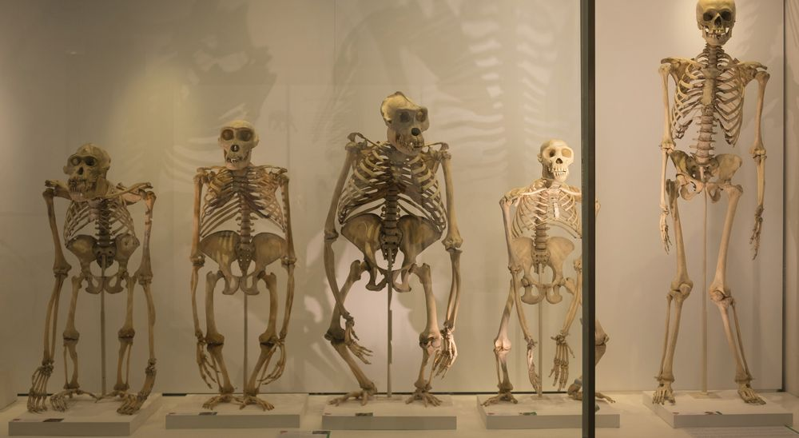

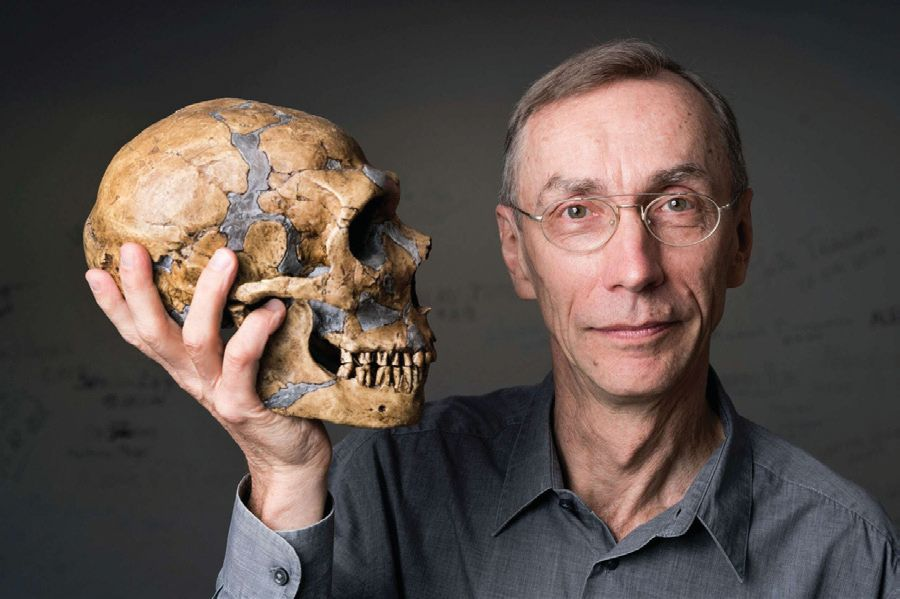
ജീവശാസ്ത്രം - IX
നമ്മൾ മനുഷ്യർ എവിടെ നിന്നാണ് വരുന്നത്? വംശനാശം സംഭവിച്ച ഹൊൊമിനിനുകളുമായി നമ്മൾ എങ്ങനെ ബന്ധപ്പെട്ടിരിക്കുന്നു?
അസ്ഥികളിൽ നിന്ന് ജീവചരിത്രം
കോോ ട ി ക്ക ണ ക്കി ന് അനാവരണം ചെ വർഷങ്ങൾ കൊൊണ്ട് യ്യുന്നതിൽ ശാസ്ത്രീ ഭൂമിയിലെ ജീവൻ്റെ യ ാ ന്വ വേഷ ണ ത് തി വൈവിധ്യയം രൂപപ്പെട്ട ൻ്റെ പ്രാധാന്യവും, തിനെക്കുറിച്ച് സമഗ്ര തെളിവുകളെ അടി മായ വിശദീകരണം സ്ഥാനമാക്കി നിഗ സ്വവാൻ്റേ പാബോോ നൽകുന്ന ശാസ്ത്രാശയ മനങ്ങൾ രൂപപ്പെ മാണ് ജീവപരിണാമം. ജനിതകശാസ്ത്രം, ടുന്നതിൽ ശാസ്ത്രത്തിൻ്റെ പങ്കും തിരിച്ചറിയാൻ ഭ്രൂണശാസ്ത്രം, പാലിയൻ്ററോളജി അഥവാ ഫോോ ജീവപരിണാമപ്രക്രിയ സഹായിക്കും. സിൽ പഠനം എന്നിവയുൾപ്പെടെ വിവിധ പുരാതനമായ അസ്ഥിക്കഷണത്തിൽ നിന്ന് മേഖലകളിൽ നിന്നുള്ള ധാരാളം തെളിവുക ഡി.എൻ.എ വേർതിരിച്ചെടുത്ത് വിശകലനം ളിലൂടെയാണ് ജീവപരിണാമചിത്രം നിർമ്മി ചെയ്തതിലൂടെ മനുഷ്യപൂർവിക ജീവികളും ക്കുന്നത്. ഫോോസിലുകളുടെ പഠനം ഭൂതകാല ആധുനികമനുഷ്യരും തമ്മിലുള്ള ജനിതക ത്തിലേക്ക് വെളിച്ചം വീശുന്ന ഫലവത്തായ സാമ്യവ്യത്യയാസങ്ങളെക്കുറിച്ചുള്ള നിർണ്ണാ പഠനമാർഗമാണ്. ലളിതമായ ബാക്ടീരിയ യക കണ്ടെത്തലുകളാണ് സ്വവാൻ്റേ പാബോോ മുതൽ സങ്കീർണ്ണഘടനയുള്ള ദിനോോസറുക എന്ന സ്വവീഡിഷ് പരിണാമ ജനിതക ശാസ്ത്ര ളും സസ്തനികളും ഉൾപ്പെടെയുള്ളവയുടെ ജ്ഞൻ നടത്തിയത്. ഫോോസിലുകളിൽ നിന്ന് ഫോോസിലുകളുടെ പഠനം ജീവൻ്റെ ചലനാ ഡി.എൻ.എ. വീണ്ടെടുക്കുന്നതിനും വിശകല ത്മക സ്വഭാവത്തിൻ്റെ കഥ പറയുന്നു. എല്ലാ നം ചെയ്യുന്നതിനുമുള്ള ആധുനിക സാങ്കേ ജീവജാലങ്ങളുടെയും പരിണാമപരമായ പര തികവിദ്യകളിലൂടെയാണ് അദ്ദേഹം പാലി സ്പരബന്ധത്തെ അനുമാനത്തിനോോ ഊഹാ യോോജീനോോമിക്സ് എന്ന ശാസ്ത്രശാഖയ്ക്ക് അടി പോോഹത്തിനോോ പകരം നിരീക്ഷണം, തെളി ത്തറയിട്ടത്. വംശനാശം സംഭവിച്ച ഹൊൊമി വുകൾ, ശാസ്ത്രീയവിശകലനം എന്നിവയുടെ നിനുകളുടെ ജീനോോമിനെക്കുറിച്ചും മനുഷ്യ അടിസ്ഥാനത്തിൽ ശാസ്ത്രീയമായി വിശദീക പരിണാമത്തെക്കുറിച്ചുമുള്ള നൂതനകണ്ടത്ത രിക്കാൻ ഫോോസിലുകളടക്കമുള്ള പഠനം ലിന് 2022 ൽ അദ്ദേഹത്തിന് നോോബേൽ സഹായിക്കും. പ്രകൃതിയുടെ നിഗൂഢതകൾ സമ്മാനം ലഭിച്ചു. 107
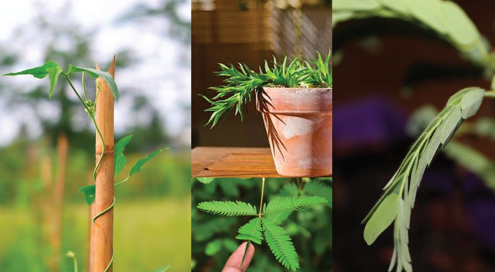
ജീവശാസ്ത്രം - IX
സസ്യങ്ങളിലെ ചലനം (Movement in Plants) ജന്തുക്കളിൽ മാത്രമല്ല സസ്യങ്ങളിലും ചലനമുണ്ടെന്ന് നിങ്ങൾക്ക റിയാമല്ലലോ. ഉദ്ദീപനങ്ങൾക്കനുസരിച്ചാണ് സസ്യചലനങ്ങൾ നടക്കു ന്നത്. ജീവജാലങ്ങളിൽ പ്രതികരണത്തിന് കാരണമാകുന്ന ആന്തരി കമോോ ബാഹ്യമോോ ആയ പ്രേരണയാണ് ഉദ്ദീപനം. പ്രകാശം, ജലം, ഭൂഗുരുത്വവം, സ്പർശം, രാസവസ്തുക്കൾ മുതലായവ സസ്യചലനത്തിനി ടയാക്കുന്ന ഉദ്ദീപനങ്ങളാണ്. ചിത്രം 4.2 വിശകലനം ചെയ്ത് വിവിധതരം സസ്യചലനങ്ങളും അവയ്ക്കിടയാക്കുന്ന ഉദ്ദീപനങ്ങൾ ഏതെന്നും ചർച്ചചെയ്ത് കണ്ടെത്തൂ.
ചിത്രം 4.2 സസ്യചലനങ്ങൾ നിങ്ങൾ ലിസ്റ്റ് ചെയ്ത സസ്യചലനങ്ങൾക്കെല്ലാം ഉദ്ദീപനത്തിന്റെ ദിശയുമായി ബന്ധമുണ്ടടോ? ചർച്ചചെയ്യൂ. ചിത്രീകരണം 4.11 വിശകലനം ചെയ്ത് നിങ്ങളുടെ കണ്ടെത്തലിന്റെ സാധുത പരിശോോധിക്കൂ. സസ്യചലനം
ട്രരോപ്പിക ചലനം (Tropic movement)
നാസ്റ്റിക ചലനം (Nastic movement)
ഉദ്ദീപന ദിശയ്ക്കനുസരിച്ചുള്ള ചലനം
ഉദ്ദീപന ദിശയ്ക്കനുസരിച്ചല്ലാതെയുള്ള ചലനം
ചിത്രീകരണം 4.11 സസ്യചലനങ്ങൾ 108


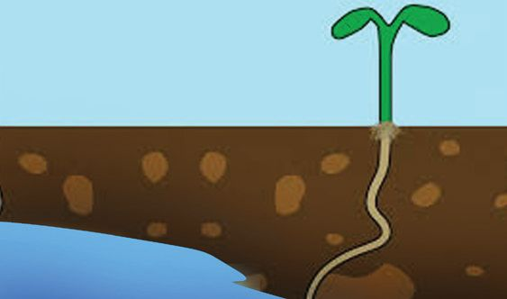

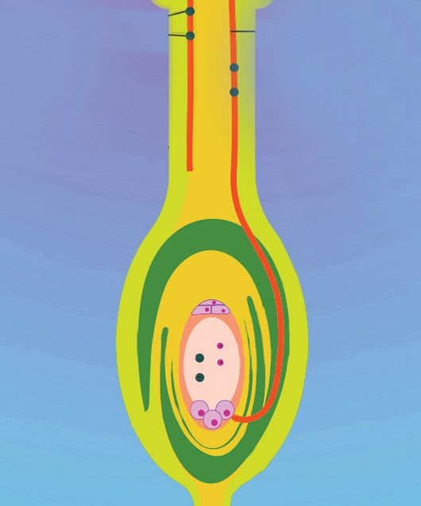
ജീവശാസ്ത്രം - IX
ചിത്രീകരണം 4.12 വിശകലനം ചെയ്ത് സസ്യത്തിന്റെ കാണ്ഡത്തി ന്റെയും വേരിന്റെയും ചലനം ഉദ്ദീപനദിശയുമായി എപ്രകാരം ബന്ധപ്പെട്ടിരിക്കുന്നു എന്ന് തിരിച്ചറിഞ്ഞ് പട്ടിക 4.7 പൂർത്തിയാക്കുക.
പ്രകാശട്രരോപ്പികചലനം
ഭൂഗുരുത്വട്രരോപ്പികചലനം
ജലട്രരോപ്പികചലനം
ചിത്രീകരണം 4.12 ട്രരോപ്പിക ചലനങ്ങൾ സസ്യചലനം
ഉദ്ദീപനം
കാണ്ഡത്തിന്റെ ചലനദിശ
പ്രകാശ ട്രരോപ്പികചലനം ഭൂഗുരുത്വ ട്രരോപ്പിക ചലനം ജല ട്രരോപ്പികചലനം
പട്ടിക 4.7 ട്രരോപ്പിക ചലനങ്ങൾ സസ്യങ്ങളിൽ കാണപ്പെടുന്ന മറ്റ് രണ്ടുതരം ട്രരോപ്പിക ചലനങ്ങൾ ചിത്രീകരണം 4.13 ൽ നൽകിയിരിക്കുന്നു. ഇവയുടെ സവിശേഷതകൾ കണ്ടെത്തി സയൻസ് ഡയറിയിൽ രേഖപ്പെടുത്തൂ. സ്പർശട്രരോപ്പികചലനം
രാസട്രരോപ്പികചലനം
ചിത്രീകരണം 4.13 മറ്റ് ട്രരോപ്പികചലനങ്ങൾ 109
വേരിന്റെ ചലനദിശ

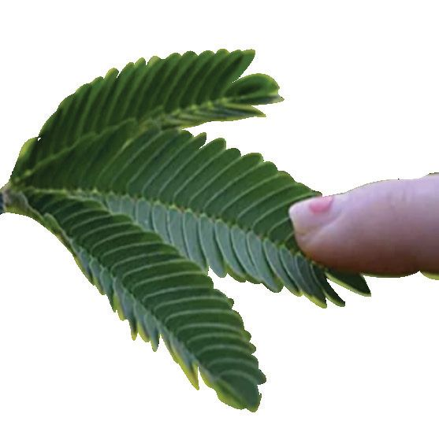
ജീവശാസ്ത്രം - IX
ചിത്രത്തിൽ കാണുന്നതുപോോലെ ഒരു പെട്ടിയിൽ മരപ്പപൊടിയും ജലം നിറച്ച മൺകലവും ക്രമീകരിച്ച് പയറുവിത്തുകൾ പെട്ടിക്കുള്ളിൽ പല ഭാഗങ്ങളിലായി നിക്ഷേപിക്കുക. ഏതാനും ദിവസങ്ങൾക്കുശേഷം ശ്രദ്ധയോോടെ മൺകലം പുറത്തെടുക്കുക. വേരുകളുടെ വളർച്ചാദിശ നിരീക്ഷിക്കുക. നിരീക്ഷണം
: .........................................................................................................
നിഗമനം
: ......................................................................................................... തൊൊട്ടാവാടി ചെടിയിൽ നിങ്ങൾ തൊൊട്ടുനോോക്കിയിട്ടു ണ്ടടോ? തൊൊട്ടാവാടി ചെടിയുടെ ഇലയുടെ ചലനം എപ്രകാരമാണ്? ഇത് ഏത് തരം ചലനമാണ്? ഇത്തരം ചലനങ്ങളുടെ പ്രത്യയേകത എന്താണ്? ഇത്തരം ചലനങ്ങളെ നാസ്റ്റിക ചലനം എന്ന് പറയുന്നു. നാസ്റ്റികചലനത്തിന് ലിസ്റ്റ് ചെയ്യൂ.
കൂടുതൽ
ഉദാഹരണങ്ങൾ
y y കോോശങ്ങളിലെ തന്മാത്രാചലനം മുതൽ ജീവികളിലെ വൈവിധ്യമാർന്ന ചലനങ്ങൾ വരെ ജീവികളുടെ നിലനിൽപ്പിനുള്ള അനുകൂലനമാണ്. ഇവയെക്കുറിച്ചുള്ള അറിവ് ജീവലോോകത്തെ ചലനവൈവിധ്യങ്ങളുടെ അത്ഭുതത്തെ അനാവരണം ചെയ്യുകമാത്രമല്ല ജീവന്റെ പരിണാമത്തെ ക്കുറിച്ച് ഉൾക്കാഴ്ച നൽകുകയും ചെയ്യുന്നു. പരിണാമപ്രക്രിയ മാറിക്കകൊണ്ടിരിക്കുന്ന ചുറ്റുപാടുകളോോട് പൊൊരുത്തപ്പെടാൻ ജീവി വർഗങ്ങളെ സഹായിക്കുന്നു. നിരന്തരം ഉയർന്നുവരുന്ന പ്രശ്നങ്ങളെ നേരിടുന്നതിന് സമൂഹവും പരിവർത്തനാത്മക ചലനങ്ങൾക്ക് വിധേയമാകേണ്ടതുണ്ട്. നിലനില്പിനും പുരോോഗതിക്കും കൂടുതൽ നീതിയുക്തമായ ലോോകത്തെ പിന്തുടരാനും ഈ ചലനങ്ങൾ സഹായിക്കും.
110


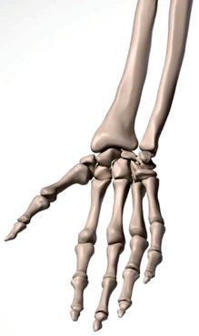
ജീവശാസ്ത്രം - IX
വിലയിരുത്താം 1.
ചുവടെ നൽകിയിരിക്കുന്നവയിൽ ഓരോോന്നിലും ഉൾപ്പെടുന്ന സസ്യചലനം ഏതെന്ന് കണ്ടെത്തി എഴുതുക. a)
പയർചെടി താങ്ങിൽ ചുറ്റിവളരുന്നു. b) പുഴയുടെ തീരത്തുള്ള തെങ്ങ് പുഴയിലേക്ക് ചരിഞ്ഞ് വളരുന്നു. c) പരാഗനാളി അണ്ഡാശയത്തിലേക്ക് വളരുന്നു. d) തൊൊട്ടാവാടിയിൽ തൊൊടുമ്പപോൾ ഇലകൾ കൂമ്പുന്നു.
2.
ചുവടെ നൽകിയിരിക്കുന്ന പ്രസ്താവന ഏതുരോോഗത്തെ സൂചിപ്പി ക്കുന്നു എന്ന് തിരിച്ചറിഞ്ഞെഴുതുക.
ശരീരത്തിന് പ്രതിരോോധശക്തി നൽകുന്ന ചില കോോശങ്ങൾ ചിലരിൽ തരുണാസ്ഥിയെയും സൈനോോവിയൽ സ്തരത്തെയും നശിപ്പിച്ചേക്കാം. 3.
ചുവടെ തന്നിരിക്കുന്ന സവിശേഷതകളിൽ നിന്നും പേശി ഏതെന്ന് തിരിച്ചറിഞ്ഞെഴുതുക. - കോോശത്തിൽ ഒറ്റമർമ്മം ഉള്ളവ. - സ്പിൻഡിൽ ആകൃതിയുള്ള കോോശങ്ങൾ.
4.
X, Y, Z എന്നിങ്ങനെ സൂചിപ്പിച്ചിരിക്കുന്ന അസ്ഥിസന്ധികളുടെ
ചിത്രങ്ങൾ നിരീക്ഷിച്ച് അവ ശരിയായി വരുന്ന ഉത്തരം തിരഞ്ഞെടുക്കുക. X
a)
Y
X
Z
Y
Z
ഗോോളരസന്ധി തെന്നിനീങ്ങുന്ന സന്ധി
കീലസന്ധി
b)
കീലസന്ധി ഗോോളരസന്ധി
വിജാഗിരി സന്ധി
c)
തെന്നിനീങ്ങുന്ന സന്ധി
d)
വിജാഗിരി സന്ധി കീലസന്ധി
വിജാഗിരി സന്ധി ഗോോളരസന്ധി തെന്നിനീങ്ങുന്ന സന്ധി 111

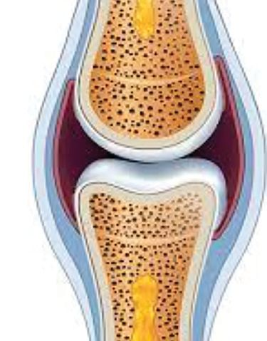
ജീവശാസ്ത്രം - IX 5.
അസ്ഥി, പേശി എന്നിവയ്ക്കുണ്ടാകുന്ന തകരാറുകൾ കോോളം 1 ലും അവയ്ക്കുള്ള കാരണം കോോളം 2 ലും നൽകിയിരിക്കുന്നു. അവ വിശകലനം ചെയ്ത് ശരിയായ ജോോഡികൾ ഉൾപ്പെടുന്ന ഉത്തരം തിരഞ്ഞെടുക്കുക. കോോളം 1 കോോളം 2 P) ഉളുക്ക് i. പ്രതിരോോധശക്തി നൽകുന്ന കോോശങ്ങൾ തുണാസ്ഥിയിൽ ഉണ്ടാക്കുന്ന നാശം Q) ഓസ്റ്റിയോോപോോറോോസിസ് ii. ജീനുകളിലുണ്ടാകുന്ന മാറ്റം R) റുമാറ്ററോയ്ഡ് iii. ലിഗമെന്റുകൾ വലിയുകയോോ ആർത്രൈറ്റിസ് പൊൊട്ടുകയോോ ചെയ്യുന്നതിനാൽ S) പേശീക്ഷയം iv. പ്രരോട്ടീൻ, കാത്സ്യം, വിറ്റാമിൻ D എന്നിവയുടെ അഭാവം (a)
6.
P – ii ,
Q - iv,
R - i,
S - iii
(b) P – iv,
Q - iii,
R - ii,
S-i
(c)
P – i,
Q - ii,
R - iii,
S - iv
(d) P – iii,
Q - iv,
R - i,
S - ii
ചിത്രം പകർത്തിവരച്ച് ചുവടെ നൽകിയിട്ടുള്ള ചോോദ്യങ്ങൾക്ക് ഉത്തരമെഴുതുക. X (a). ചുവടെ സൂചിപ്പിച്ചിരിക്കുന്ന ഭാഗങ്ങൾ തിരിച്ചറിഞ്ഞ് പേരെഴുതി അടയാളപ്പെടുത്തുക. i) അസ്ഥികൾക്കിടയിലുള്ള ദ്രാവകം ii) ഘർഷണം കുറയ്ക്കാൻ അസ്ഥികളുടെ അഗ്രഭാഗത്ത് കാണുന്ന ഭാഗം (b). ചിത്രത്തിൽ X എന്ന് അടയാളപ്പെടുത്തിയ ഭാഗം തിരിച്ചറിഞ്ഞ് ധർമ്മം എഴുതുക.
തുടർപ്രവർത്തനങ്ങൾ 1. 2.
3.
ജീവലോോകത്തെ സഞ്ചാരവൈവിധ്യയം സംബന്ധിച്ച ചിത്രങ്ങളും വിവരങ്ങളും ശേഖരിച്ച് ക്ലാസിൽ പ്രദർശിപ്പിക്കുക. വ്യയായാമത്തിന്റെ പ്രാധാന്യയം സൂചിപ്പിക്കുന്ന പോോസ്റ്ററുകൾ ഗ്രാഫിക്സ് സോോഫ്റ്റ് വെയറുകൾ ഉപയോോഗിച്ച് തയ്യാറാക്കി നോോട്ടീസ്്ബബോർഡിൽ പ്രദർശിപ്പിക്കുക. നിങ്ങളുടെ ചുറ്റും കാണുന്ന ജീവികളെ നിരീക്ഷിച്ച് അവയുടെ ചലനത്തിലെ വൈവിധ്യത്തെക്കുറിച്ച് സയൻസ് ഡയറിയിൽ രേഖപ്പെടുത്തൂ. 112